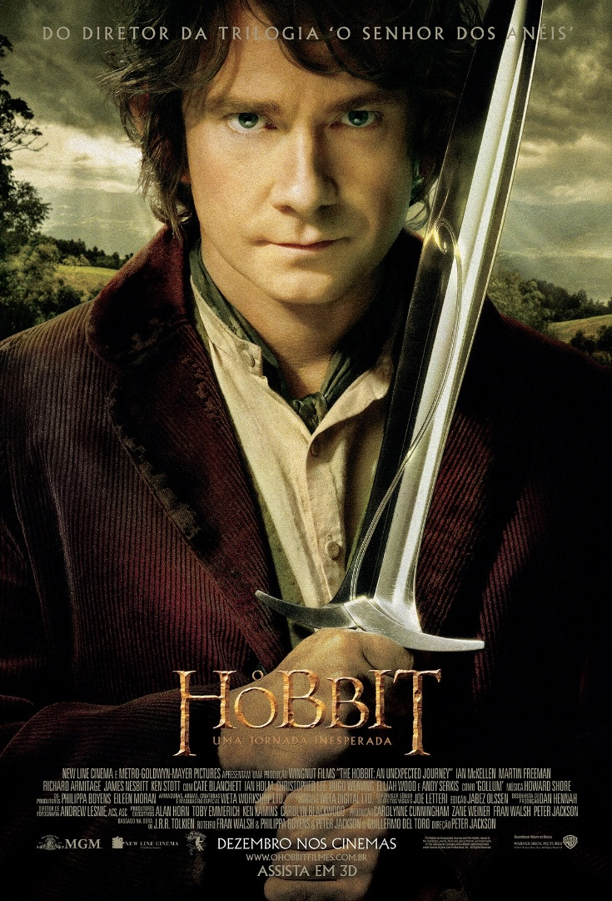
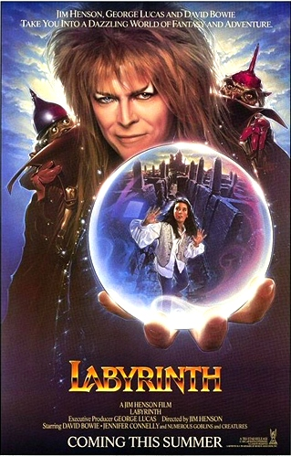

Alguns filmes e séries vão muito além do entretenimento. Eles despertam lembranças, provocam reflexões, nos fazem rir, chorar e, muitas vezes, nos ajudam a enxergar um pouco mais de nós mesmos.
Cada pessoa se conecta com uma história de um jeito particular. Às vezes, é um personagem que parece nos compreender; outras vezes, é uma experiência que nos lembra alguém, uma fase da vida ou até sentimentos que nem sempre conseguimos colocar em palavras.
Nesta coleção, reunimos filmes e séries escolhidos por pacientes, acompanhados de suas próprias impressões e dos motivos pelos quais essas histórias conquistaram um lugar especial em suas vidas.
Porque, no fim das contas, não é apenas sobre o que assistimos, mas também sobre aquilo que sentimos e levamos conosco depois que a tela se apaga.

O Hobbit: Uma Jornada Inesperada
“O Bilbo Bolseiro (personagem principal) poderia ter vivido uma vida tranquila, segura e previsível no Bolsão, mas mesmo com medo e totalmente fora da sua zona de conforto escolhe aceitar um convite inesperado. Em alguns momentos questiona essa decisão e tudo o que queria era ter ficado em casa, mas justamente por ter saído que viveu experiências que jamais imaginaria. E no meio disso tudo também percebe que mesmo quando bate a nostalgia, melancolia, culpa e a saudade, ele não está sozinho pq construiu laços e descobre que aquilo que ele achava sem valor/normal, tipo as suas qualidades, sensibilidade e coragem, na verdade tem muito valor. Mas que não é só ele que tá nessa jornada e definitivamente não é mais o mesmo Hobbit de quando saiu do condado.”

Labirinto - A Magia do Tempo
‘’Meu filme favorito é o Labirinto. A história trata de uma menina que é apaixonada por teatro, e especificamente por uma peça sobre “O Rei dos Goblins”, em que esse personagem sequestra crianças e leva para o castelo dele, que fica no meio de um labirinto, e os transforma em goblins. No filme, o pai dela é separado - acho que a mãe dela morreu - e ele casou com uma outra mulher, que tem um filho pequeno. Quando os pais saem, ela precisa ficar em casa cuidando do irmão e ele não para de chorar. Ela, sem paciência nenhuma com o irmão mais novo, pede ao Rei dos Goblins - interpretado pelo David Bowie - que ele leve o irmão, e ele realiza o pedido dela. Obviamente, como todas irmãs mais velhas, que apesar de achar os irmãos mais novos um porre, ela também não quer que o bebê vire um Goblin. Para recuperar o irmão, ela precisa entrar no labirinto e ir até o castelo do Rei. O filme é um musical, com os efeitos especiais produzidos manualmente. Ele me dá o efeito de um sonho. Um bom sonho de aventura. Eu acho que é meu filme favorito porque a personagem principal começa o filme com um desejo/sonho - mesmo que seja sumir com o irmão, é um desejo - e depois ela precisa lidar com as consequências adversas do desejo dela quando esse desejo se torna, de fato, realidade. Ao enfrentar essa “realidade”, ela parte em uma aventura em que ela vai fazer amigos - todos eles monstros que moram no labirinto, é claro - e precisar se autoconhecer, se frustrar, chorar, e usar todas as ferramentas que ela tem para dar a volta por cima dessa situação e salvar o irmão. No final do filme, ela volta para casa com o irmão e precisa se despedir dos amigos que ela conheceu, que talvez sejam representações dos medos, manias e características dela mesma, talvez precisando se desfazer desses traços que ela tinha, ou seja, se despedindo da adolescência e indo para a vida adulta. Ou talvez só porque monstros gigantes não cabem no planejamento urbano de uma cidade moderna, nem na dinâmica do capitalismo. Enfim, é um filme que me faz sonhar, perceber que as jornadas que escolhemos, não precisamos enfrentar sozinhas, e que quando os nossos desejos e sonhos se tornam realidade, eles também vão ter frustrações, momentos de choro, de riso, e às vezes, até de cantoria.’’